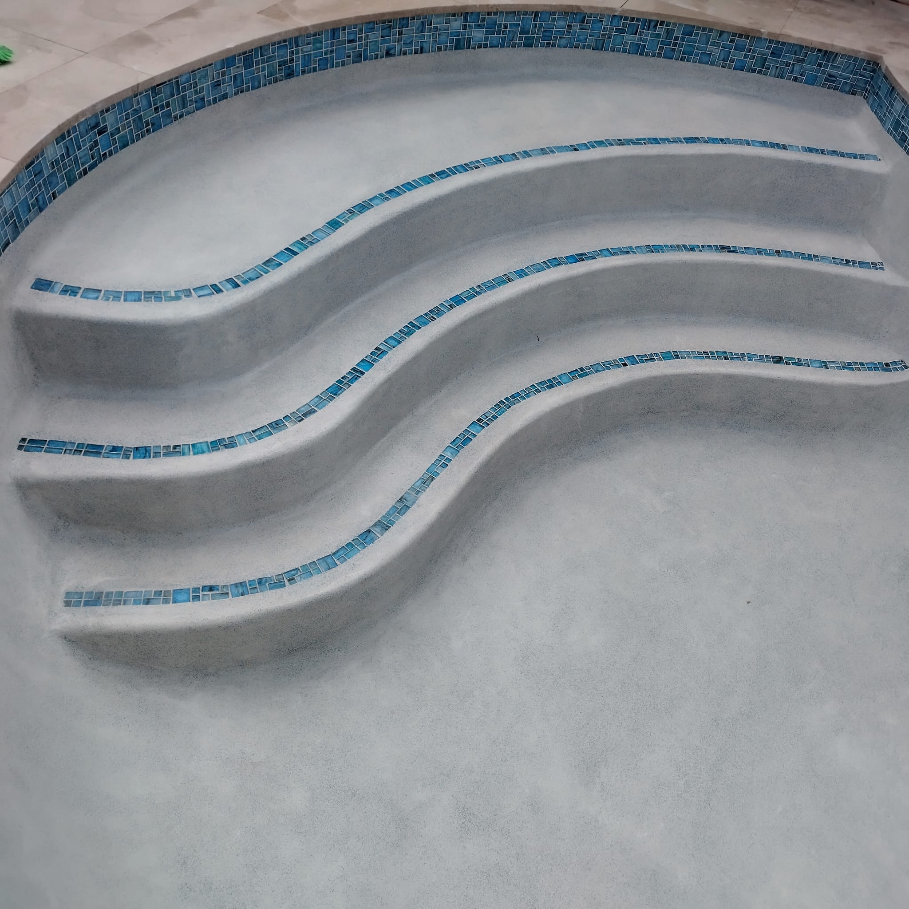

Sealing your pavers is the single most important maintenance step you can take to protect your investment in South Florida's harsh climate. But many homeowners aren't sure when to do it, what product to use, or how often it's needed. This guide covers everything you need to know.
Why Sealing Matters in Florida
Florida's combination of intense UV radiation, heavy rain, humidity, and organic growth (mold, algae, weeds) is exceptionally hard on pavers. Without a sealer, concrete pavers fade significantly within 3–5 years, joints erode and allow weed growth, and the surface becomes stained from oil, rust, or organic material. A good sealer extends the life and beauty of your pavers by 10+ years.
Types of Paver Sealers
Penetrating Sealers (Recommended): These soak into the paver and provide protection from within without changing the surface appearance or making it slippery. Best for driveways, pool decks, and areas where slip resistance matters. They last 3–5 years in Florida.
Film-Forming Sealers (Wet Look / Gloss): These sit on top of the paver and give a glossy or "wet look" finish. They enhance color dramatically but can be slippery when wet and may peel or yellow over time in intense heat. Best for decorative patios in covered or shaded areas.

When Should You First Seal New Pavers?
Wait at least 60–90 days after new paver installation before applying sealer. The pavers need time to cure and effloresce (the white calcium deposits that rise to the surface). Sealing too early traps efflorescence under the sealer, causing permanent cloudiness. After the initial wait, clean thoroughly and apply sealer on a dry day.
Sealing Schedule for West Palm Beach: First seal at 90 days after installation. Reseal every 2–3 years for penetrating sealers, every 1–2 years for film-forming sealers. Always pressure wash and dry completely before resealing.
DIY vs. Professional Sealing
While homeowners can apply sealer themselves, professional results require proper surface prep, the right equipment, and experience with application rates and overlap techniques. Uneven application leaves visible roller marks or missed sections. For large driveways or high-visibility areas, professional sealing is worth the cost ($0.50–$1.50 per sq ft for labor).
Signs Your Pavers Need Sealing Now
Water no longer beads on the surface, colors look faded or washed out, joint sand is eroding, weeds are growing in joints, or you notice staining that didn't wash off with regular cleaning — any of these mean it's time to reseal.
Call Pavers Ordonez at (561) 970-1917 to schedule professional sealing service anywhere in Palm Beach County.